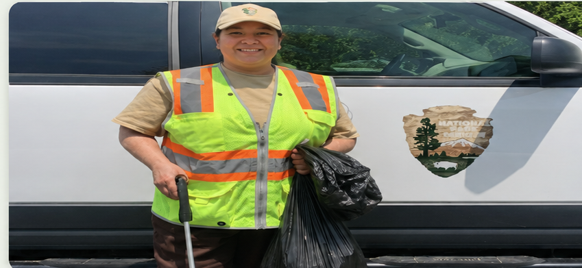
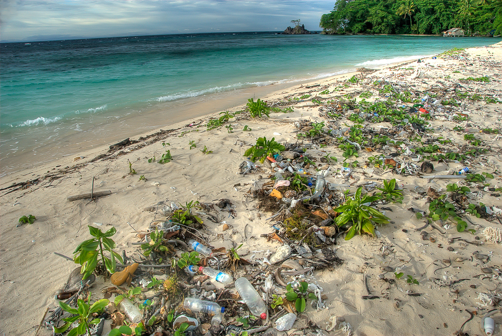
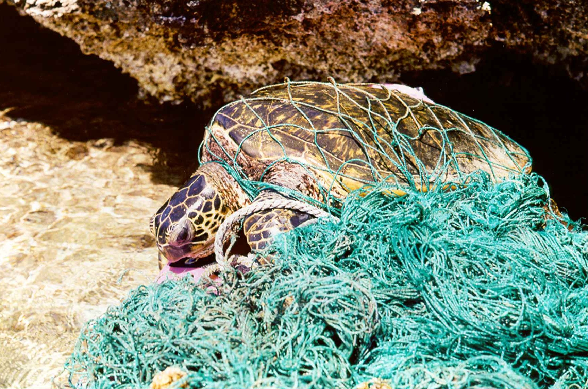

0
Bottles Logged
Small actions. Big impact.
Help protect wildlife, waterways, and communities by recording the bottles, wrappers, and cans you collect.
Start LoggingWhy GreenPath?
Litter can travel through streets and storm drains before reaching rivers, lakes, and oceans. It can also harm wildlife and make public spaces less safe and beautiful.
GreenPath encourages people to take action by recording every bottle, wrapper, and can they remove from the environment.
Collect it. Record it. Make a difference.
Take Action
Select an item below to record your cleanup contribution.
Our Impact Together
These totals are calculated from the bottles, wrappers, and cans recorded through GreenPath.
0
Bottles Logged
0
Wrappers Logged
0
Cans Logged
0
Total Items Collected
Community Goal
Every bottle, wrapper, and can moves the community closer to the cleanup goal.
0% complete
Did You Know?
Understanding the problem helps us see why every cleanup contribution matters.

Plastic items are the most common type of marine debris found in oceans, waterways, and the Great Lakes.
Learn more from NOAA →
Animals may swallow plastic or become entangled in it, making it difficult for them to move, breathe, or feed.
Learn more from the EPA →Recycling materials such as aluminum helps conserve energy and reduces the need to produce materials from new natural resources.
Learn more from the EPA →Start Today
Every item you collect is one less piece of litter in the environment.